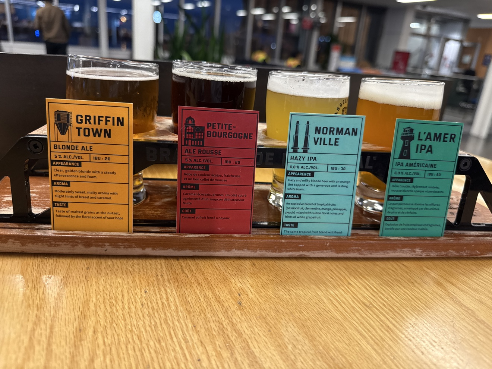

A work trip that turned into a food trip. Five days, one rule: eat where Montrealers eat — and find the Indian food cooked the way it's meant to be.
Best plate
Vijayawada chicken biryani, Bawarchi
Best plane moment
Heavy-watching at Newark, Terminal A
Don't miss
St-Viateur bagels, still warm
Local rule learned
BYOW — bring your own wine
Day 1 · Sat Oct 3
The layover was the first destination
The trip started the way my trips like to start — plane spotting on a layover. Newark's Terminal A, a window seat near the A18/A19 gates, runway 4R arrivals, and a parade of United heavies plus SAS A330s. I was hunting one specific aircraft: SAS's all-blue 80th anniversary A330. It went to JFK instead that day. The hunt continues.
Landed in Montreal in the evening and went straight for North Indian food. A solid start — and it set up the question for the rest of the trip: where's the Indian food here that's cooked for people who actually know it?
📷 Your photo hereNewark Terminal A window — heavies on 4R
Day 2 · Sun Oct 4
Bagels, market, and Chettinad heat
Morning at St-Viateur Bagel — wood-fired, boiled in honey water, exactly as good as everyone says — then coffee at Café Olimpico. After that, Jean-Talon Market for Honeycrisp apples and a wander. I somehow walked straight past the market's Oktoberfest final day happening right there. Next time.
Dinner was the answer to my Day 1 question: Lakshana's Chettinad (5623 Côte-des-Neiges) — Tamil Chettinad cooking with real fire in it. Lamb chukka and a masala dosa. This is food cooked for the community, not adjusted for anyone, and it's the best Indian meal I had in the city.
Local intel: Many Montreal restaurants are BYOW — bring your own wine, they supply glasses and charge little or no corkage. Lakshana's is one of them. A bottle from the SAQ turns a great dinner into a cheap one.
📷 Your photo hereSt-Viateur bagels / Jean-Talon Market haul
Day 3 · Mon Oct 5
The biryani run & the wine run
Lunch objective: the best chicken biryani in Montreal. Verdict: Bawarchi downtown (1249 Rue Bishop) and their Vijayawada chicken biryani — real spice, real aroma, a generous portion, and the Hyderabadi style done properly.
Then a wine run to the SAQ for something sweet, not dry. Moscato d'Asti is the answer — the Michele Chiarlo Nivole wasn't on the shelf, so the Batasiolo Bosc dla Rei came home instead (same wine, same sweetness; Moscato d'Asti can't legally be dry). Second bottle: a Dr. Loosen Riesling from the Mosel. Ice-cold, both of them.
The evening ended at the hotel bar working through a French cocktail menu. Winner: the Santa Colada — two rums, soursop, pineapple and basil. The Aperol-heavy Pink Panthere was too bitter for my palate, and the Santiago Neruda was the tartest of the lot.
📷 Your photo hereThe Vijayawada biryani / the two bottles
Day 4 · Tue Oct 6
Messi's last game
Some nights are history. This was Lionel Messi's final match for Argentina — his 208th cap — a farewell against Benin at the Monumental in Buenos Aires. Café Conca D'oro in Little Italy (184 Rue Dante) hosted a watch party with the terrace open, and I nearly went.
In the end I watched from my hotel room — and honestly, better view, no crowd. Argentina won 3–0, and the post-match ceremony (the golden-numbered shirt, the signed jersey from his teammates, the drone show) was the part worth staying for. A 15-year-old Enzo Fernández once wrote Messi a letter begging him not to retire; ten years later he published a farewell letter back. Full circle.
Also that day, in local news: Quebec elected a Parti Québécois minority government — the first since 2012. The city had a buzz about it.
📷 Your photo hereThe farewell on screen / Conca D'oro terrace
Day 5 · Wed Oct 7
Rained out, then wheels up
The plan had been a sail-away: the Seabourn Ovation departing the Old Port at 5pm. The forecast flipped — showers from 5pm onward — so the photo op drowned before it started. Sometimes the weather wins.
Flight home was 8:30pm from YUL to Edmonton (domestic — no preclearance, two hours is plenty; I left downtown at 5:30, Uber over the 747 bus since it was a work expense, and Montreal construction is no joke). At the airport: a blackened chicken poutine, because leaving Montreal without one more poutine is against the rules, and a Brasseur de Montréal beer flight at the gate.

The YUL flight, left to right in tasting order: Griffintown Blonde (20 IBU) → Petite-Bourgogne Rousse (20) → Normanville Hazy IPA (30) → L'Amer IPA (60 — save it for last, it bites).
Home to Sherwood Park by late evening. Montreal: I'll be back for the sail-away shot.